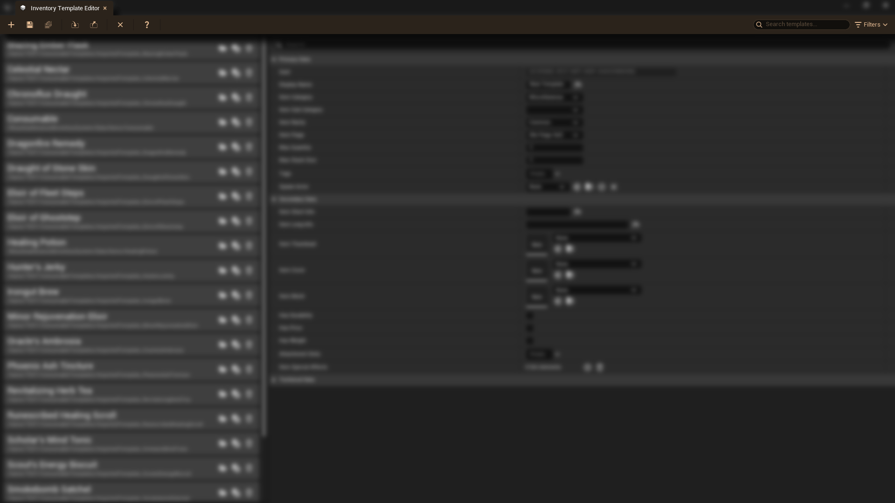
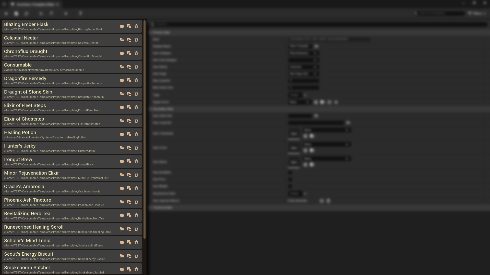
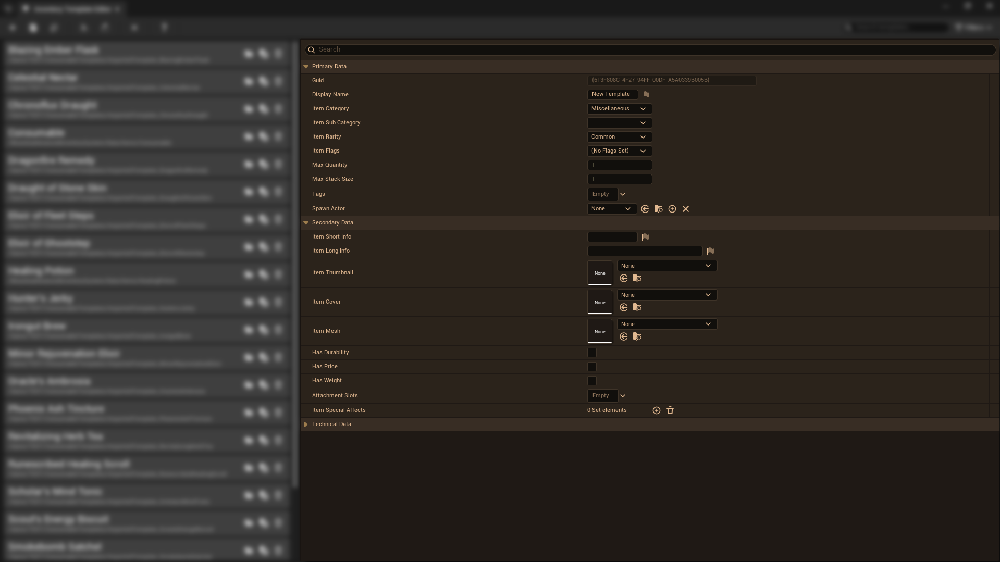

What the editor is for
The Item Template Editor is where you create and manage item templates
for the Mountea Inventory System. The goal is to provide a centralized
interface to improve quality of life.
Layout overview
The window is divided into three main parts:
-
Top toolbar (top) contains following actions:
- New Template
- Save Template
- Save All Templates
- Import Template
- Export Item
- Show Help
- Search

-
Template list (left)
-
Shows all available item templates from the whole Project,
including all Project folders and plugins.
- Each entry also displays its asset path under the name

-
Template details (right)
-
Shows all properties for the currently selected template,
grouped in sections.
-
Shows all properties of all currently selected templates to
allow bulk editing similar to Matrix Editor.

Working with templates
When you open the Editor, the Template details show transient data you
can directly start editing to create new record. You can also select
from existing template from the Template list to load its data.
-
Select a template in the list on the left to load its details on the
right.
-
Use the search box in the upper-right corner of the list panel to
find templates by specified filters.
-
Use the Item Template buttons to open containing folder, duplicate
the selected template, or even delete it.
-
In the details panel, expand or collapse sections to focus on the
data you need, such as basic information, visuals, or gameplay
properties.
Next steps
Once you are comfortable with navigating the editor, you can start
creating new item templates, assigning icons and meshes, and filling
in gameplay data. Next page will demonstrate how to create your first
item template.